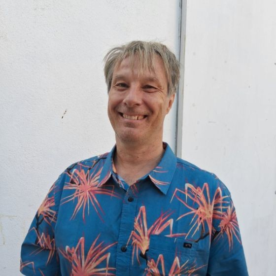

CV - Antonio Rodriguez Andres
antoniorodriguezandres70@gmail.com

BIOGRAPHY
Dr. Antonio Rodríguez Andrés has been taking up academic positions as associate professor of Economics at different international universities: Denmark, Colombia, Spain, Chile, Morocco, Cyprus, and Czech Republic. He got a PhD in Economics at University of Southern Denmark. He has a master degree in Industrial Economics from Universidad Carlos III de Madrid.
His research focuses on quantitative methods, applied health economics, and law and economics. He has published in international refereed journals with high impact factors such as Journal of Business Ethics, Health Policy, and Technological Forecasting and Social Change, and Expert Systems with Applications.
He is also currently on the international advisory board of The Economic and Labour Relations Review. Besides that, he has been also an international coordinator for international students in the Faculty of Economics at UCJC, Spain. He has also served on several accreditation committees during his academic experience.
Dr. Antonio has actively participated in international conferences and symposiums as a speaker as well as an organizer. He has also ample teaching experience at both graduate and undergraduate levels. He has been teaching in several subjects within Economics, Econometrics, and Statistics. He has also supervised master students and internship papers. Dr. Antonio has also applied for external grants from different sources: Economic Research Forum (ERF), and Forum EuroMediterraneen des Instituts de Sciences Economiques (FEMISE).
Lastly, he took up a prestigious Marie Curie Fellowship at the University of Sheffield under the supervision of Dr. Jennifer Roberts (Full Professor of Health Economics, University of Sheffield).
EDUCATION
Habilitation degree – Economics
VSB TU-Ostrava October 2018
Doctor of Philosophy – Economics
University of Southern Denmark June 2005
- Topics in Applied Econometrics. Supervisor: J.T. Lauridsen (University of Southern Denmark), and Jan Rose Skaksen (Rockwool Foundation). PhD Scholarship (2001–2005)
M.Sc. in Economics
University of Lausanne September 2001
M.Sc. in Industrial Economics
Universidad Carlos III de Madrid September 1995
B.A. in Economics
Universidad Autonoma de Madrid June 1993
WORK EXPERIENCE
Full Professor of Economics, German University in Cairo, Faculty of Management and Technology, Department of Economics August 2021 – July 2026
Associate Professor of Economics, VSB TU Ostrava, Faculty of Business and Economics, Department of Economics, Ostrava, Czech Republic May 2017 – July 2021
Professor of Economics, Universidad del Norte (UNINORTE), Business School, Department of International Business, Barranquilla, Colombia January 2016 – July 2017
Associate Professor of Economics, Eastern Mediterranean University (EMU), Faculty of Economics, Department of Economics, Famagusta, North Cyprus September 2013 – August 2014
Associate Professor of Economics, Al Akhawayn University (AUI), School of Business Administration, Ifrane, Morocco January 2012 – August 2013
PUBLICATIONS
HIV viral load suppression and associated factors among PLHIV with non-communicable diseases in Uganda’s Teso Region: a cross-sectional retrospective study (joint with Oryokot, Ssentongo, Oluka, et al.). AIDS Research and Therapy, 23, 31, 2026.
Technological knowledge gaps: Implications for the economic performance and welfare of developing and emerging market economies (together with Dr. Asongu and Dr. Voxi Amavilah). Forthcoming in The Journal of Knowledge Economics, 2026.
Knowledge Economy and the Economic Performance of African Countries: A Seemingly Unrelated and Recursive Approach (joint with Dr. Voxi Amavilah). The Journal of Knowledge Economy, 2024.
Broadband use and trade facilitation: Impacts on bilateral trade of sub-Saharan countries (joint with Dr. Margarita Billon and Dr. Ernesto Rodriguez). African Development Review, 2023.
Knowledge economy classification in African countries: A model-based clustering approach (joint with Dr. Amavilah and Dr. Abraham Otero). Information Technology for Development, 2022.
Using deep learning neural networks to predict the knowledge economy index for developing and emerging economies (joint with Dr. Amavilah and Dr. Otero). Expert Systems with Applications, 2022.
Convergence in suicide rates in FSU: A clustering approach (with Dr. Amavilah). Applied Economics Letters, 30(9), 1183–1188.
Evaluation of technology clubs by clustering: a cautionary note (joint with Dr. Amavilah and Dr. Abraham Otero). Applied Economics, 2021.
Trajectories of knowledge economy in SSA and MENA countries (joint with Dr. Asongu). Technology in Society, 2020.
Do emigrants’ remittances cause Dutch disease? A developing countries case study (joint with Dr. Polat). The Economic and Labour Relations Review, 30(1), 59–76.
Effects of globalization on peace and stability: Implications for governance and the knowledge economy of African countries. Technological Forecasting and Social Change, 2017.
Trade openness, labor market rigidity, and growth: A dynamic panel data analysis (joint with Dr. Polat). The Economic and Labour Relations Review, 28(4), 555–564.
Is corruption really bad for inequality? Evidence from Latin America (joint with Dr. Carlyn Dobson). Journal of Development Studies, 2011.
BOOKS & BOOK CHAPTERS
A Bibliometric Literature Review: Measurements of Economic Resilience. In: Ghoneim, H. et al. (eds) Positive Performativity and Transformative Management Research. Springer Proceedings in Business and Economics, 2025.
A Socio-Economic and Demographic Analysis of Mental Well-Being: The Indian Case
Nova Science Publishers, February 2021 (editors: Prof. Antonio Rodriguez Andres & Prof. Siddhartha Mitra), ISBN: 978-1-53619-023-6.Forecasting Business Software Piracy Rates: A machine learning approach (together with H. Kaur). In Lechman, E. (Editor). Routledge. 2020.
Linkages between Formal Institutions, ICT Adoption and Inclusive Human Development in Sub-Saharan Africa. In Lechman, E., Marszk, A., & Kaur, H. (eds), Catalyzing development through ICT adoption. Springer. 2017
Measuring the quality of copyright institutions (together with Nora El Bialy). Encyclopedia of Law and Economics. Springer. New York. 2014.
PAPERS UNDER REVIEW
The Interrelation between CEO Activism and Activist Entrepreneurship: A Bibliometric Analysis (Joint with Dr. Abdelwahab, Dr. Raghda El Ebrashi, and Mariam El Zamly). Submitted to Social Responsibility Journal, 2026
Identifying structural breaks in infant mortality: Evidence from Angola, 1950-2023 (joint with Rabia Naqvi, UCC, Ireland). Submitted to Population Health Metrics, 2026.
What Works for Monitoring Suicide Deaths? Comparing Model Specifications in Spain (joint with Sei Takane, Kansai Airports). Submitted to Social Psychiatry and Psychiatric Epidemiology, 2026.
Systematic Review of Financial Inclusion in Low Income Countries Using Livelihoods, Empowerment and Market-Systems Framework (joint with Dr. Atem), 2026. Submitted to Development Studies Research.
Critical Mineral Supply Concentration and Price Volatility: Panel Evidence from Six Minerals, 2010–2024 (joint with Dr. Voxi Amavilah). Submitted to Applied Economics Letters, 2026.
Bundled Indicators to Monitor Intervention priorities for reducing the sex gap in suicide mortality (joint with Sei Takane). Submitted to: Annals of Epidemiology. 2026
ONGOING RESEARCH
Retractions in Business and Economics Research: Patterns and Determinants of Retraction lag (joint with Dr. Noha Tarek and Dr. Savina Kirilova). Target journal: Scientometrics, 2026.
Energy intensity and digitalization in Nigeria: A machine learning approach (joint with Dr. Ike Naga).Target journal: Technological Forecasting and Social Change, 2026.
Institutional Inequalities and the Propensity to Innovate: Evidence from Egyptian SMEs (joint with Dr. Salma Yasser Tosson, and Dr. Dalia Abdelwahab). In The Digital Disruption of Financial Services: International Perspectives, edited by Piotr Płatkowski, Ewa Lechman, Javier Barbero Jimenez and Margarita Billon Curras. Routledge. December 2026.
Mapping the Intellectual Structure of Nonmarket strategy research: A Topic Modeling Approach (joint with Dr. Dalia Abdelwahab). Target journal: Business & Society, 2026.
FDI and Global Value Chain Integration in Croatia: From Investment Attraction to Domestic Upgrading. In preparation for the Handbook of Innovation in Croatia. Expected. December 2026.
SKILLS
- Programming: R, Python, Quarto
- Data Analysis: Panel Data, Machine Learning, Bibliometric Analysis, Binary Choice Models, Time Series Analysis
- Tools: Quarto, LaTeX, Scopus
- AI tools: Claude Code, Chat GPT 5.5, Consensus.
PRESENTATIONS AND WORKSHOPS
Clustering emerging economies: A comparative analysis of institutional configurations using K-prototype algorithm (September 2024, 22nd SSRNet International Conference on Corporate Social Responsibility, GUC campus, Cairo, Egypt)
The impact of digitalization on tax compliance in EU countries (May 2024, Digital Transformation Society Conference, Naples, Italy)
Health care use by immigrants and natives: Lessons for Poland from the Danish Experience (May 2023, University of Warsaw, Center for Migration Research)
CONTACT
📧 Email: antonio.andres@guc.edu.eg
🌐 Google Scholar: scholar.google.com
🔗 ORCID: 0000-0001-6578-5118
REFERENCES
Prof. Ewa Lechman
Department of Economics, University of Gdansk, Gdansk, Poland
📧 ewa.lechman@pg.edu.pl Relationship: Habilitation Assessment Committee, colleague
Associate Professor. Dr. Ernesto Rodriguez Crespo Department of Applied Economics, Universidad Autonoma de Madrid, Madrid, Spain 📧 ernesto.rodriguez@uam.es